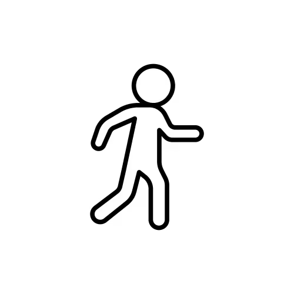

TARANNUM TABASSUM ISLAM
Hydroinformatics • Water Management • Data-driven methods • ML and AI Enthusiast
Home
About
Research
Projects
Publications
Contact
☰
🚧 This portfolio is currently under construction with veeery limited functionality. New sections and projects will be added soon, so please come back again later! 🚧
